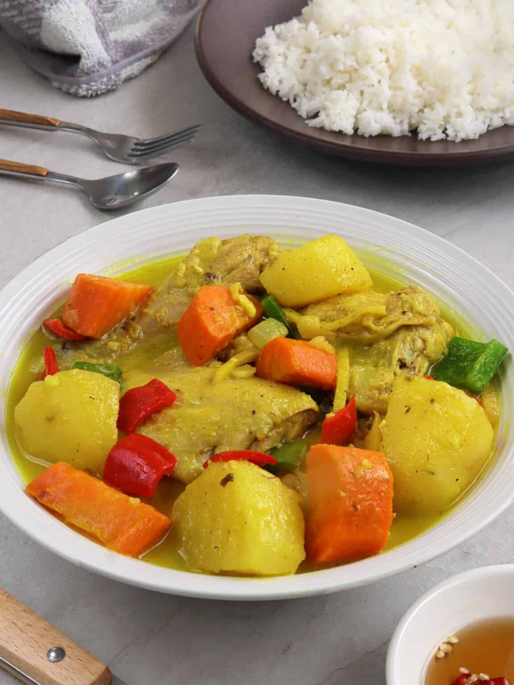

Pinoy Style Chicken Curry

Description
Filipino-style coconut chicken curry is hearty,
tasty, and sure to be a family favorite Easy to make with only a handful
of ingredients, cooks in one pan, and is ready in an hour. Perfect for
busy weeknights!
Ingredients
- 1/4 cup canola oil
- 2 medium potatoes, peeled and quartered
- 2 large carrots, peeled and cubed
- 1/2 green bell pepper, cored, seeded and cut into cubes
- 1/2 red bell pepper, cored, seeded and cut into cubes
- 1 onion, peeled and cubed
- 3 cloves garlic, peeled and minced
- 1 thumb-size ginger, peeled and julienned
- 1 (3 pounds) bone-in chicken, cut into serving pieces
- 1 tablespoon fish sauce
- 1 cup coconut milk
- 1 cup water
- 2 tablespoons curry powder
- salt and pepper to taste
Instructions
-
In a wide pan over medium heat, heat oil. Add potatoes and cook for
about 2 to 3 minutes or until lightly browned and tender. Remove from
pan and drain on paper towels.
-
Add carrots and cook for about 1 to 2 minutes. Remove from pan and drain
on paper towels.
-
Remove excess oil from pan except for about 1 tablespoon. Add bell
peppers and cook for about 30 to 40 seconds. Remove from pan and set
aside.
- Add onions, garlic, and ginger and cook until softened.
-
Add chicken and cook, stirring occasionally until lightly browned.
- Add fish sauce and continue to cook for about 1 minute.
-
Add coconut milk and water. Bring to a simmer, skimming any scum that
may float on top.
-
Lower heat, cover, and simmer for about 20 to 30 minutes or until
chicken is cooked.
-
Add potatoes and carrots and cook for about 3 to 5 minutes or until
tender.
-
Add curry powder and stir to combine. Continue to cook for about 2 to 3
minutes or until sauce starts to thicken.
- Season with salt and pepper to taste.
-
Add bell peppers and cook for about 1 minute or until tender yet crisp.
Serve hot.